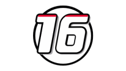
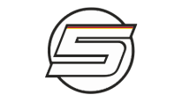
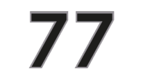
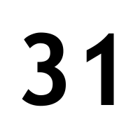
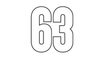
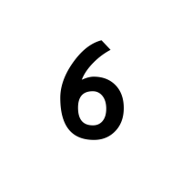
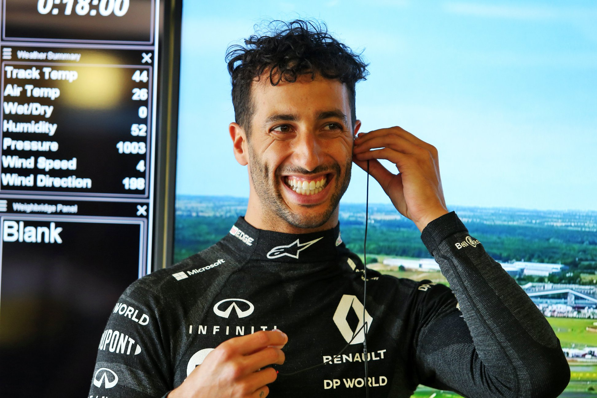

In de Formule 1 strijden er tien constructeurs voor het kampioenschap. Het verschil tussen constructeurs en teams is dat constructeurs hun eigen auto moeten maken en teams niet. Elke constructeur heeft twee coureurs, wat dus een totaal maakt van twintig coureurs in de Formule 1. Elke coureur heeft zijn eigen racenummer, dat overal voor gebruikt wordt en waaraan de coureurs gemakkelijk herkend worden. In de tabel hieronder kan je zien welke teams er zijn, welke coureurs zij hebben en wat hun bijbehorende nummer is.
| Constructeur | Coureur 1 | Coureur 2 |
|---|---|---|
| Alfa Romeo | Antonio Giovinazzi  |
Kimi Räikkönen  |
Alpha Tauri | Daniil Kvyat  |
Pierre Gasly |
| Ferrari | Charles Leclerc  | Sebastian Vettel  |
| Haas F1 Team | Kevin Magnussen  |
Romain Grosjean |
| Mclaren | Carlos Sainz | Lando Norris |
| Mercedes | Lewis Hamilton  |
Valtteri Bottas  |
| Racing Point | Lance Stroll  |
Sergio Pérez |
| Red Bull Racing | Alexander Albon | Max Verstappen  |
| Renault | Daniel Ricciardo  |
Esteban Ocon  |
| Williams | George Russell  | Nicholas Latifi  |
De beste
Er kan er natuurlijk maar één de beste zijn. En de beste, dat is tegenwoordig bijna altijd Mercedes. Omdat ze zo'n goede auto hebben, winnen ze eigenlijk elke race. Fouten maken ze zelden. De beste coureur van de paddock van 2020 is Lewis Hamilton, hij rijdt voor Mercedes. Hij staat elke race wel op het podium, als hij de race al niet wint. Door zijn goede auto en zijn talent heeft hij al zeven weredtitels gewonnen. Toch is Hamilton lang niet de favoriete coureur van iedereen. Als je aan een Nederlander vraagt wie zijn favoriet is, zal zeker tachtig procent van hen Max Verstappen zeggen. Verstappen heeft ook veel talent en kan erg goed racen. Hij is de jongste racewinnaar ooit in de Formule 1. Vaak wordt hij derde in een race, omdat zijn auto van Red Bull nog nét niet goed genoeg is om de Mercedessen te verslaan.
Mijn favoriet
Aangezien ik uit Nederland kom, lijkt het logisch dat Max Verstappen ook mijn favoriete coureur is. Maar dat is helemaal niet zo, ik vind hem zelfs een beetje overrated. Mijn favoriete coureur is Daniel Ricciardo. Daniel rijdt voor Renault en heeft zeker het talent om hoog te eindigen bij een Grand Prix, maar helaas is zijn auto niet de beste. Hij heeft echter wel twee podia gehaald dit jaar, hij werd twee keer derde. Maar gewoonlijk eindigt hij ergens rond de zesde plek. Dat vind ik natuurlijk erg jammer. Ricciardo komt uit Perth in Australië en is geboren op 1 juli 1989. Zijn naam spreek je op zijn Engels uit: rie-kar-do. Zijn ouders zijn Italiaans, maar omdat hij geboren en getogen is in Perth, heeft hij besloten om zijn naam Engels uit te spreken.
- Waarom Ricciardo mijn favoriete coureur is
- Hij is altijd optimistisch en vrolijk. Uit elk negatief ding kan hij wel een voordeel halen. Dat vind ik erg knap.
- Humor heeft hij ook heel erg. Hij maakt vaak grapjes en vrolijkt iedereen in de paddock op met zijn lach.
- Als er een tegenslag is, zoals een langzame pitstop of een crash, zal hij er niet snel van neergeslagen zijn. Hij staat op en gaat weer door.
- Hij is heel ambitieus en stopt niet tot hij zijn doelen bereikt heeft. Zo wil hij bijvoorbeeld nog een keer wereldkampioen worden, maar dat is hem helaas nog niet gelukt.
- Zijn helm is altijd heel mooi en vrolijk ontworpen. Er staan vaak quotes op, zoals 'be you, not them' en 'stop being them'. Hij vindt het belangrijk dat iedereen zichzelf is en dat je je niets aantrekt wat anderen vinden, dat is een goede mentaliteit.